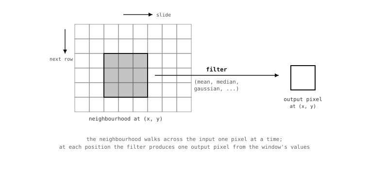

5.13. 线性滤波器与邻域滤波器¶
本章前面介绍的像素数学运算是逐点地将两幅图像组合在一起。滤波器（Filters） 以另一种相关的方式完成类似的工作：它们根据对应位置周围的一小块输入像素 邻域（neighbourhood） 来计算每个输出像素的值。(x, y) 处的输出是以 (x, y) 为中心的小方框内输入像素的某种统计量——平均值、中位数或出现最频繁的值。
这个看似细微的视角变化——从一次处理一个像素转变为一次处理一个像素窗口——正是让一整类实用运算得以工作的关键。在小窗口上做简单平均可以平滑掉传感器噪声。在同一窗口上取中位数则可以去除单像素斑点，同时不像平均那样过度柔化边缘。双边平均拒绝在强对比边界两侧进行平滑，从而既清理了物体内部的纹理，又保留了物体的边缘。邻域是处理的基本单元；而统计量的选择则决定了滤波器的功能。
5.13.1. 卷积核大小¶
每个邻域滤波器都接受一个 size 参数，用于设定窗口的 半径（以像素为单位）。窗口本身是正方形的，每条边覆盖 (2 * size + 1) 个像素——因此 size=1 表示 3×3 的邻域，size=2 表示 5×5，size=3 表示 7×7，依此类推。

邻域以一次一个像素的方式从左上到右下扫过图像。每个输出像素都是将滤波器的统计量应用到以其为中心的输入邻域所得到的结果。¶
更大的 size 意味着更大的邻域，也就意味着更平滑（或更激进）的滤波。计算开销随窗口面积增长，因此 size=3 的滤波器对每个像素所做的工作量大约是 size=1 滤波器的九倍。对于大多数清理工作，实际默认值是 size=1 或 size=2；只有当小邻域不足以抑制应用试图抑制的特征时，才需要使用更大的 size。
5.13.2. 均值滤波器¶
mean() 用每个像素邻域的 算术平均值 来替换该像素。其结果会在窗口大小范围内平滑像素间的变化，这使它成为抑制传感器噪声斑点最廉价的方式：高频变化被平均掉，而低频内容得以保留。
代价是边缘和其他锐利特征也会被平均化。在滤波前宽度为一个像素的明亮边缘，经过 size=1 的均值滤波后会变成两到三个像素宽，并且亮度在两侧逐渐衰减。对于纹理稀少的图像（一面干净的墙、彩色标记物的内部）的纯噪声抑制而言，这种代价是可以接受的。但对于边缘很重要的繁忙场景，下面介绍的某种滤波器通常更合适。
img.mean(1) # 3x3 box average -- fast, gentle smoothing
img.mean(2) # 5x5 box average -- stronger, slower
5.13.3. 中位数、众数、中点¶
另外三种统计邻域滤波器用对离群值更稳健的方式取代了简单的算术平均。
median() 返回邻域的 中位数——即窗口像素排序列表中正中间的那个值。窗口中某个极亮或极暗的像素不会拉动中位数；它只会成为被丢弃的两端极值之一。其实际效果是，中位数滤波能去除单像素斑点和椒盐噪声，而不会像 mean 那样柔化边缘。代价是每个像素的计算量更大——对窗口排序比求平均要慢——并且结果严格来说并不是平均值，这在下游数学运算中有时会有影响。
percentile 参数（默认 0.5）可以将所选值从严格的中位数偏移开。percentile=0.0 返回邻域的最小值，percentile=1.0 返回最大值；中间的值则在排序窗口中按比例选取二者之间的值。这赋予了 median 在不失去顺序统计量离群稳健性的前提下，强调邻域中较暗或较亮部分的能力。
mode() 返回邻域中 出现最频繁 的值。当噪声模型是“大多数像素是正确的，少数像素被不同程度地破坏”时，它很有用，此时正确答案就是出现次数最多的那个值——当被破坏的值堆积在排序窗口的一侧时，中位数可能会错过这个值。
midpoint() 返回邻域 最小值与最大值的加权组合——bias=0.5 给出二者之间的中点，bias=0.0 给出最小值，bias=1.0 给出最大值。它不如其他几种常用，但当目标特别是要提取较暗或较亮的特征时，值得了解。
5.13.4. 双边滤波器：保边版本¶
bilateral() 是最值得深入理解的邻域滤波器。它能产生与 mean() 相同的平滑效果，但带有一个额外约束：邻域像素与中心像素 差异 越大，它在平均中所占的权重就越小。其结果是平滑每个均匀区域的内部，而不会跨越分隔它们的边缘渗透，这正是大多数应用真正想要的效果。
有两个参数控制滤波器对像素的折算力度：
color_sigma决定 颜色差异 如何影响权重。值越小，滤波器对折算与中心像素不同的像素就越严格。space_sigma决定 空间距离 如何影响权重。值越小，越靠近中心的像素权重越大。
默认值（color_sigma=0.1、space_sigma=1.0）是合理的起点；调优它们通常就是在一帧样本图像上运行滤波器，然后不断调整，直到边缘清晰且内部干净。
双边滤波比 median() 开销更大，比 mean() 开销大得多，因此 只有 当保边行为正是应用所需要时，才值得使用它。
5.13.5. 自适应阈值化¶
均值、中位数、众数和中点滤波器都带有同一对关键字参数，可以将它们的输出变成二值阈值：
threshold=True将滤波器切换到阈值化模式。offset=N在比较之前将局部阈值偏移N个单位。
其工作机制直接建立在滤波器的常规行为之上。不带 threshold=True 时，滤波器在邻域上计算其统计量，并将该统计量写入输出像素。带 threshold=True 时，滤波器计算相同的统计量，然后将同一位置的 源 像素与该统计量加上偏移量进行比较，如果源像素更大则写入该格式的最大值，否则写入零。
其结果是一幅二值图像，其阈值会随整帧的 局部亮度 而移动。明亮区域获得较高的阈值，昏暗区域获得较低的阈值，而一个在局部上比其邻居更亮的前景像素，无论它位于明亮区域还是昏暗区域都能匹配——这正是单一全局阈值在光照不均的图像上无法产生的行为。
img.mean(3, threshold=True, offset=5)
offset 参数是应用控制测试 严格程度 的地方。一个小的正偏移要求源像素明显比其邻居更亮才算作匹配，这以丢失微弱前景为代价抑制了传感器噪声的误报。一个小的负偏移则以放过部分噪声为代价捕获微弱前景。如何选择取决于流水线的其余部分将如何处理二值输出。
![Three image panels in a row. The first is an input grayscale frame with a brightness gradient and foreground marks scattered across at uniform darkness. The second panel shows a global threshold applied to it: the foreground is correctly classified on the bright side, but the entire dark side reads as foreground because page and foreground both fall below the cutoff. The third panel shows an adaptive threshold applied to the same input: the foreground is correctly classified across the whole frame.](../../../../_images/adaptive-threshold.svg)
在光照不均的情况下，单一全局阈值无法描述每个位置上的前景。以 threshold=True 运行的邻域滤波器会产生一个随局部亮度移动的阈值，从而在整帧范围内正确地对前景进行分类。¶
整个滤波器家族都能运行自适应阈值，因此选择 正确的 滤波器很重要：用 mean() 实现开销最低的自适应阈值，当输入存在椒盐噪声、且希望滤波器在计算局部阈值前先剔除它时则用 median()。